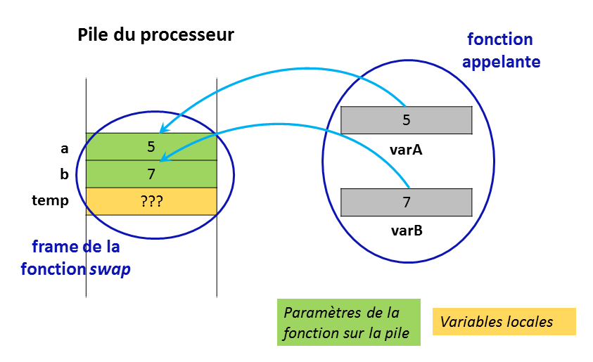
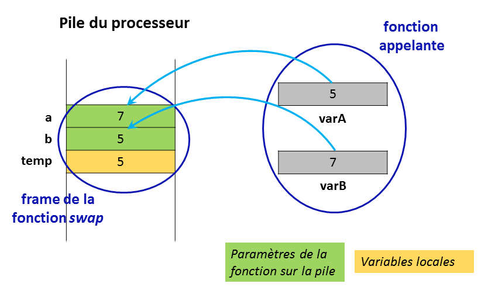
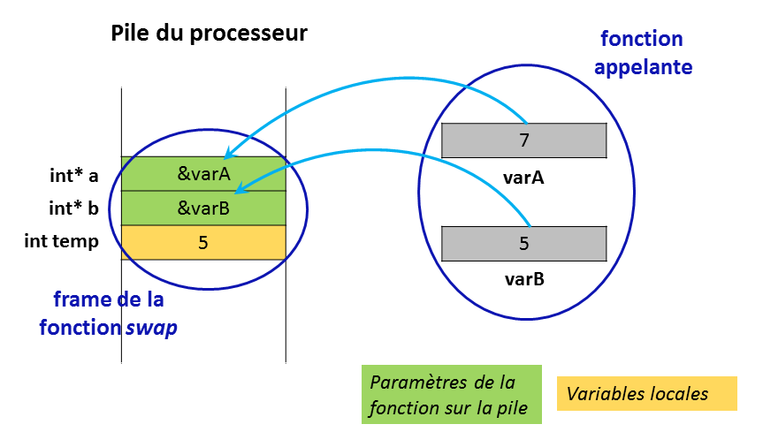

7. Fonctions
Une fonction, est une sous-routine, un morceau de programme qui s'exécute indépendemment du déroulement de l'application principale. L'intérêt d'utiliser des fonctions dans les programmes réside dans la simplification du code liée à l'isolement en parties distinctes, fonctionnelles de certains traitements. Un autre avantage induit par l'utilisation de fonctions est la réutilisation possible du code à plusieurs endroits de l'application et même dans différents programmes. De plus, les fonctions peuvent cacher des détails d'implémentation et ainsi clarifier le déroulement principal de l'application.
Pour créer des fonctions dans un programme C, il est nécessaire d'une part d'en déclarer le prototype en début de fichier et d'autre part de les définir en fin de fichier, après la fonction main.
La déclaration des fonctions
Le prototype d'une fonction se déclare toujours en début de fichier, soit dans un fichier d'include, soit directement dans le fichier source. Cette déclaration permet de renseigner le compilateur sur les caractéristiques de la fonction : la liste des paramètres, en précisant leur type, et le type de la fonction, càd. le type de la valeur de retour. Par exemple la déclaration suivante
int fct (int, char);
annonce au compilateur que fct est une fonction de type int, càd. qu'elle retourne une valeur int et qu'elle utilise 2 paramètres, le premier de type int et le deuxième de type char.
Une fonction qui n'utilise aucun paramètre sera éventuellement déclarée avec une liste de paramètres valant void. Tandis qu'une fonction qui accepte un nombre variable de paramètres pourra spécifier une liste indéterminée de paramètres:
int fct (param1, param2, ...);
Par défaut, si une fonction n'est pas déclarée, cette fonction sera considérée par le compilateur de type int, ce qui pourra conduire à des incompatibilités.
La définition des fonctions
Outre la liste des paramètres ainsi que son type, la définition d'une fonction reprend le code de la fonction. Le code est en fait un bloc d'instructions, placé entre les caractères { et }.
Les fonctions sont définies de manière indépendante, càd. qu'il n'est pas permis d'imbriquer une fonction à l'intérieur d'une autre fonction pour en restreindre l'usage. Elles sont toujours définies après la fonction main.
Les paramètres des fonctions
Les paramètres d'une fonction sont des variables locales à la fonction qui reçoivent une valeur d'initialisation provenant du programme appelant.
Comme vous l'avez vu au cours de langage d'assemblage, lors de l'appel de la fonction, les paramètres sont copiés sur la pile du processeur; à la fin de la fonction, les données de la fonction sont effacées de la pile avec comme conséquence que les paramètres sont perdus.
On dit que le passage des paramètres en C se fait par valeur: le paramètre reçoit une valeur mais ne retourne aucun résultat au sortir de la fonction. Une fonction ne peut donc pas modifier la valeur de ses paramètres.
L'exemple suivant illustre ce mécanisme. La fonction swap doit permutter le contenu de 2 variables. La première version de cette fonction :
void swap (int a, int b) { // fonction qui échange le contenu de 2 variablesint temp = a;a = b;b = temp;}
ne fonctionne pas. L'appel de cette fonction
swap(varA, varB);
ne produit aucun résultat car les valeurs permutées sont dans les paramètres a et b et pas dans les variables varA et varB. Le changement intervenu durant le déroulement de la fonction reste local. A la fin de la fonction, les données locales sont perdues.
Or, il est fréquent qu'une fonction doive retourner plus d'une valeur. Dans ce cas, le résultat de la fonction renvoyé par return ne suffit pas. Il est nécessaire qu'une telle fonction puisse utiliser des paramètres in-out.
En C, puisque les paramètres sont passés par valeur, il faut utiliser comme paramètres les adresses des variables qui doivent être modifiées par la fonction. Les paramètres doivent dès lors être des pointeurs.
Nous pouvons donc réécrire la fonction swap en utilisant des pointeurs:
void swap (int *a, int *b) { // fonction qui échange valablement le contenu de 2 variablesint temp = *a;*a = *b;*b = temp;}
L'appel de cette fonction
swap(&varA, &varB);
va produire le résultat attendu. En effet, si les adresses des variables varA et varB ne changent pas (passage par valeur), leur contenu lui a bien été modifié grâce à l'utilisation des pointeurs.
Le type de la fonction
Une fonction peut soit retourner une valeur à la fonction appelante, attention pas de tableau, soit ne rien retourner; dans ce cas certains langages les appellent "procédures", elle sera dite de type void.
void itoa (int a) {printf("%d", a);return;}
La valeur est renvoyée par la fonction grâce à l'instruction return expr où expr est une expression qu'il est préférable de placer entre ( et ). Par exemple,
double sum (double a, double b) {return (a+b);}
Si nécessaire, une conversion d'affectation sera effectuée pour adapter le type de l'expression au type de la fonction.
int cube (int a) {double res = pow(a,3);return res;}
Dans cet exemple, la fonction cube convertit le résultat de type double en une valeur de type int.
De même une conversion d'affectation peut être réalisée lors de la récupération du résultat de la fonction.
double racine3 (int a) {double res = pow(a, 1.0/3);return res;}...int i = 27, j;printf("la racine cubique de %d est %d\n", i, j=racine3(i));
Attention, C n'exige pas d'intruction return mais le résultat peut être indéterminé si elle est omise, comme dans l'exemple suivant :
int divint (int a, int b) {if (b != 0) {return (a/b);}}
Ni à la compilation, ni lors de l'exécution, n'apparaîtra un message indiquant un problème lorsque le paramètre b est nul.
Les variables des fonctions
Les fonctions utilisent différentes sortes de variables pour conserver des données durant la vie de la fonction : les variables locales, les variables statiques, les paramètres. Elles peuvent, si nécessaire, accéder aux variables externes.
Les variables locales
Une variable locale automatique (classification par défaut des variables locales) est une variable dont le rayon d'action (i.e. sa durée de vie) est limité à la fonction où elle est déclarée. Elle est créée sur la pile du processeur à chaque appel de la fonction et détruite lorsque la fonction se termine. Elle permet de stocker des données qui ne doivent vivre que durant l'exécution de la fonction.
Les variables statiques
Par contre, une variable locale statique est une variable locale à la fonction (elle ne peut pas être utilisée en dehors de la fonction) mais sa durée de vie est liée à la durée de vie de l'application. Elle n'est pas stockée sur la pile du processeur mais dans un segment de mémoire spécifique : elle ne disparaît que lorsque l'application se termine. Elle permet donc de garder l'information qu'elle mémorise d'un appel de fonction à l'autre. Un exemple de ce genre de variable est le pointeur utilisé dans la fonction strtok: à chaque appel de la fonction, il continue le traitement de la chaîne initiale à partir de l'endroit mémorisé lors de l'appel précédent.
Voici un autre exemple dans lequel on accumule, dans une variable statique, les valeurs reçues en argument:
#include ‹stdio.h›#include ‹stdlib.h›#define MAX 5int ajouter(int i);int main() {char ligne[MAX+2];while (fgets(ligne, MAX+2, stdin)) {int n = atoi(ligne);printf("%d\n", ajouter(n));}}int ajouter(int i) {static int somme = 0;return (somme+=i);}
Les variables globales
Les variables déclarées au début du fichier, à l'extérieur de toutes les fonctions (y compris la fonction principale main), sont disponibles à toutes les fonctions du programme. Ce sont alors des variables globales. En général, les variables globales sont déclarées immédiatement derrière les directives #include au début du programme.
Notez que les variables déclarées au début de la fonction principale main ne sont pas des variables globales: elles sont locales à main!
Attention! Les variables globales sont à éviter autant que possible, car elles créent des liens invisibles entre les fonctions. La modularité d'un programme peut en souffrir. De plus, des variables globales peuvent être involontairement masquées par des variables locales du même nom. Le codex de la programmation défensive nous conseille par conséquent d'écrire nos programmes aussi 'localement' que possible.
Les variables externes
La déclaration externe d'un identificateur (p.e. une variable ou une fonction) s'obtient en faisant précéder une déclaration ordinaire du mot-clé extern. Celui-ci indique au compilateur qu'il s'agit d'un identificateur référencé dans un fichier alors qu'il est défini dans un autre fichier.
S'agissant d'une variable externe, une telle déclaration ne crée pas de nouvelle variable et n'alloue pas de mémoire puisque celle-ci est définie en tant que variable globale dans autre fichier. Elle sera exportée à l'édition de liens.
Fonctions et tableaux
Le compilateur C convertit systématiquement les tableaux passés en paramètres à une fonction en pointeurs. Par conséquent, le contenu des tableaux utilisés en argument peut être modifié par la fonction! Par exemple, la fonction suivante initialise correctement un tableau passé en paramètre:
int initialiserTable (int *tab, int taille) {for (int i=0; i‹taille; i++)t[i]=i;return taille;}
Toutefois, il est possible d'empêcher une fonction de modifier un tableau passé en paramètre en le qualifiant de const:
void afficher (const int* tab) { ... }
Dans cet exemple, tab est un pointeur vers un tableau constant. Le code se trouvant à l'intérieur de la fonction ne peut donc pas modifier les éléments de tab. Le qualificateur const permet ainsi de protéger les paramètres effectifs d'une fonction en les mettant en "lecture seulement" pour la fonction.
Étant donné qu'un tableau est toujours converti en un pointeur vers son premier élément, les prototypes suivants sont strictement les mêmes:
int initialiserTable (int *tab, int taille);int initialiserTable (int tab[], int taille);int initialiserTable (int tab[10], int taille); // le 10 ne sert absolument à rien
Un tableau peut également être renvoyé comme résultat d'une fonction mais uniquement via un pointeur. Analysons le code suivant:
int[] creerTable (int taille) { // erreur: une fonction ne peut pas être de type tableauint tab[taille]; // erreur: tableau de taille variable (VLA) interditfor (int i=0; i‹taille; i++)tab[i]=i;return tab; // erreur: renvoi au programme appelant d'une variable locale qui sera détruite au retour de la fonction}
Voici une manière correcte d'implémenter une fonction qui renvoie un tableau:
int* creerTable (int taille) { // fonction de type pointeurint* tab = NULL;if ((tab = malloc(taille*sizeof(int))) == NULL) { // allocation dynamique du tableauperror("malloc error");return NULL;}for (int i=0; i‹taille; i++)tab[i]=i;return tab; // renvoi de l'adresse du tableau dynamique}
Le programme appelant doit récupérer le tableau renvoyé par la fonction.
int* t = creerTable(10);
Notez que les instructions suivantes provoqueront une erreur:
int t[6];t = creerTable(6); // erreur de compilation
En effet, le pointeur t ne peut recevoir une nouvelle adresse car il est constant: le tableau étant défini de manière statique, sa zone mémoire est allouée dès la compilation dans le data segment.